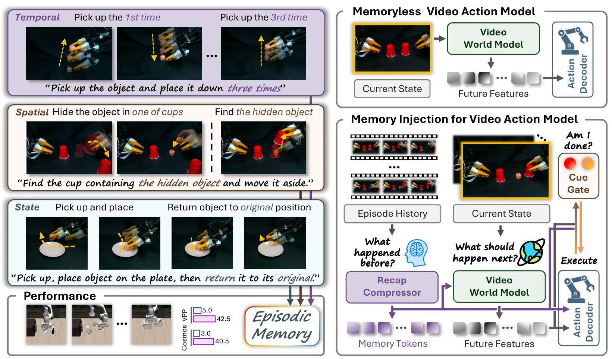
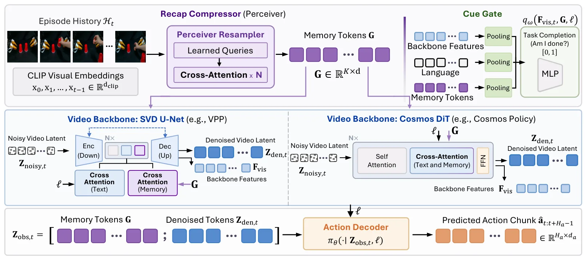
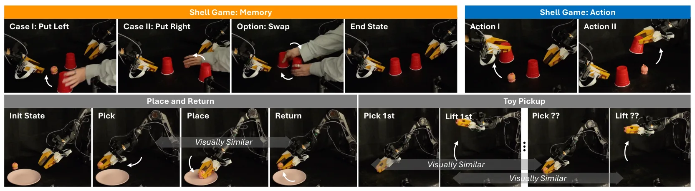
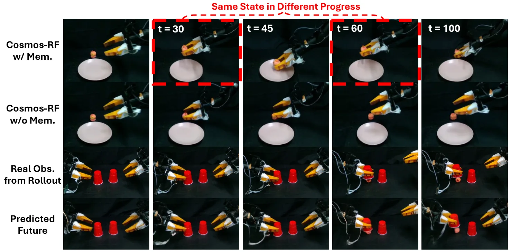
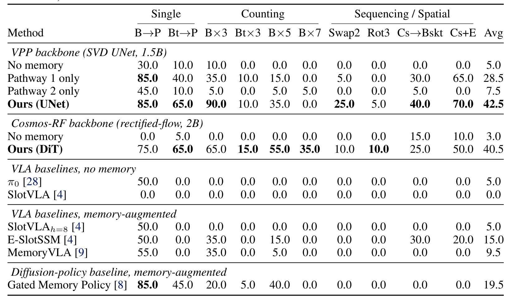
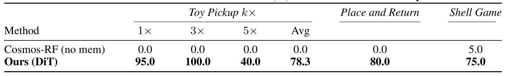

MemoryVAM：为机器人操作视频动作模型引入情节记忆MemoryVAM: Integrating Memory into Video Action Model for Robot Manipulation
对具身机器人与长期任务很有价值，虽非 SLAM 算法，但与视觉记忆、任务状态估计和操作策略相关。
一句话工作总结
为视频世界模型策略增加可注入的情节记忆，让机器人在长程操作中利用已经离开视野的历史事件。
摘要
视频世界模型策略通常只条件于短观察窗口，长程操作中若关键事件已离开视野，决策会变成非马尔可夫问题。MemoryVAM 引入 Recap-Cue 记忆模块：Perceiver-based Recap Compressor 将逐帧 CLIP embedding 压缩为记忆 token，Cue Gate 根据记忆和语言估计任务完成状态，再把这些 token 注入视频 backbone 与动作 decoder。该机制可适配 UNet 和 DiT backbone，无需逐帧进度标签。LIBERO-Mem 平均成功率从 5% 提升至 42.5%，真实机器人计数、空间回忆、序列跟踪任务成功率约 75%–80%。
Video-world-model policies learn action-relevant representations by predicting future observations. However, they condition on only a short observation window, which renders long-horizon manipulation non-Markovian when the correct action depends on earlier events that are no longer visible. We present MemoryVAM, an episodic memory mechanism for video-world-model policies. We employ a Recap-Cue (RC) module, in which a Perceiver-based Recap Compressor maps per-frame CLIP embeddings into compact memory tokens, and a lightweight Cue Gate estimates task completion from memory and language. These tokens are injected into both the video backbone and the action decoder, aligning policy imagination with episode progress and conditioning actions on history. Our model trains the memory module with video prediction, a delta-reconstruction auxiliary loss, and episode-boundary supervision, requiring no per-frame progress labels. The same mechanism applies to UNet and Diffusion Transformer (DiT) backbones by changing only the cross-attention injection interface. On LIBERO-Mem, our model improves average success from 5% to 42.5%. On real robots, it achieves 78.3% success on counting tasks, 80.0% on spatial recall, and 75.0% on sequential tracking. Project page: https://MemoryVAM.github.io/
中文解读摘录
- 英文题名：Scene-Level Heterogeneous Physics Simulation with 3D Gaussian Splats
- 作者：Xiaoyang Liu, Shangzhe Wu, Kai Han
- 类别/来源：cs.GR, cs.AI, cs.CV；rss:cs.GR；采集 score=12；阅读优先级=9.2/10。
- 一句话总结：把 3DGS、网格和流体统一抽象为物理粒子，使捕获场景中的高斯资产能够参与真实交互和非刚体变形。
- 为什么值得看：与 3DGS 场景表示、交互式三维资产和机器人仿真高度相关；亮点在于从渲染表示跨到统一物理表示。需后续确认开源计划、运行成本和复杂真实场景鲁棒性。
- 标签：3DGS、物理仿真、场景级交互、非刚体变形
- 链接：abs / PDF
图表/页面预览
{kind=link}

{kind=link}

{kind=link}

{kind=link}

{kind=link}

{kind=link}
